ENEN
JPJP


The Hip Hop Hero


★ UM JAMMER LAMMY — MISCELLANEOUS ★★ ウンジャマ・ラミー — その他 ★
Assorted Um Jammer Lammy merchandise — stickers, stationery, novelty electronics, and promotional goods that don't fit the plush, figure, keychain, shirt, or guitar categories. ウンジャマ・ラミーのその他グッズコレクション。シール、文房具、ノベルティ雑貨、販促アイテムなど、ぬいぐるみ・フィギュア・キーホルダー・シャツ・ギターのカテゴリーに収まらないアイテムをまとめています。
— STICKERS & DECALS —— シール＆デカール —
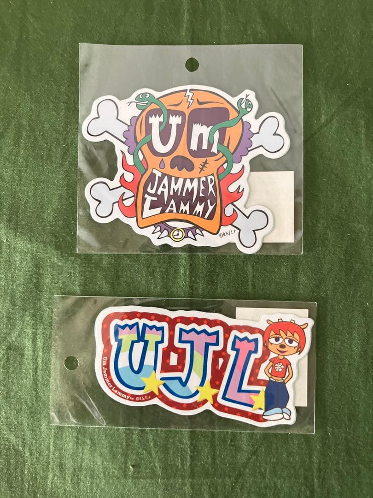
A pair of die-cut Um Jammer Lammy stickers, each sealed in its retail cellophane sleeve: the orange skull-and-crossbones "Um Jammer Lammy" logo decal, and a rainbow "U.J.L" logo sticker with a standing Lammy. Both carry the ©RG/LP licence mark.小売用のセロハン袋に封入された、ウンジャマ・ラミーのダイカットシール2枚組。オレンジのドクロ＆クロスボーン「Um Jammer Lammy」ロゴデカールと、立ちポーズのラミーをあしらった虹色の「U.J.L」ロゴシール。どちらにも ©RG/LP のライセンス表記が入っている。
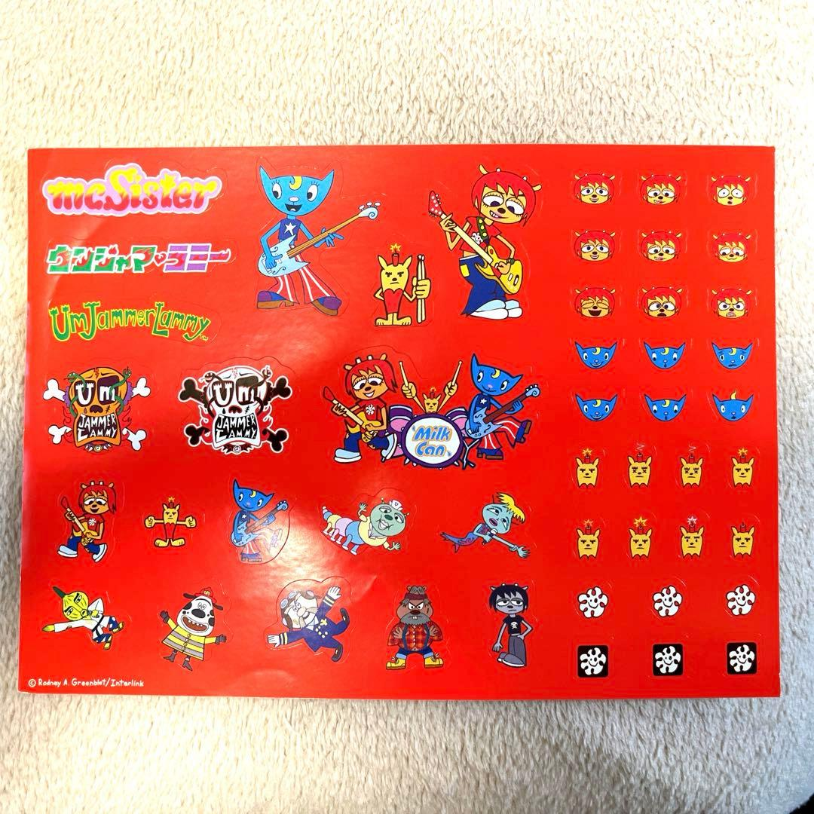
Large red sticker sheet headed with the Um Jammer Lammy logo in three scripts. The top half shows the MilkCan band in action, while the lower half packs in character stickers and rows of tiny Lammy, Ma-san, and Katy face decals. Credited © Rodney A. Greenblat / Interlink.ウンジャマ・ラミーのロゴを3種類の書体で配した大判の赤いシール台紙。上半分には演奏中のMilkCanバンド、下半分にはキャラクターシールと、ラミー・マーさん・ケイティの小さな顔シールがびっしり並ぶ。© Rodney A. Greenblat / Interlink のクレジット入り。

A packed sticker sheet (item FA-67329-10) filled with die-cut character faces — rows of Lammy pulling different expressions, blue Katy heads, candle-topped Ma-san, monochrome PJ Berri, and the white skull-flower crest — with a small MilkCan band scene above the Um Jammer Lammy flame logo at the bottom. © Rodney A. Greenblat / Interlink.ダイカットのキャラクター顔シールがびっしり詰まったシール台紙（品番 FA-67329-10）。さまざまな表情のラミー、青いケイティの顔、ロウソクを灯したマーさん、モノクロのPJベリー、白いドクロ花の紋章などが並び、下部のウンジャマ・ラミー炎ロゴの上には小さなMilkCanバンドのイラストが添えられている。© Rodney A. Greenblat / Interlink。
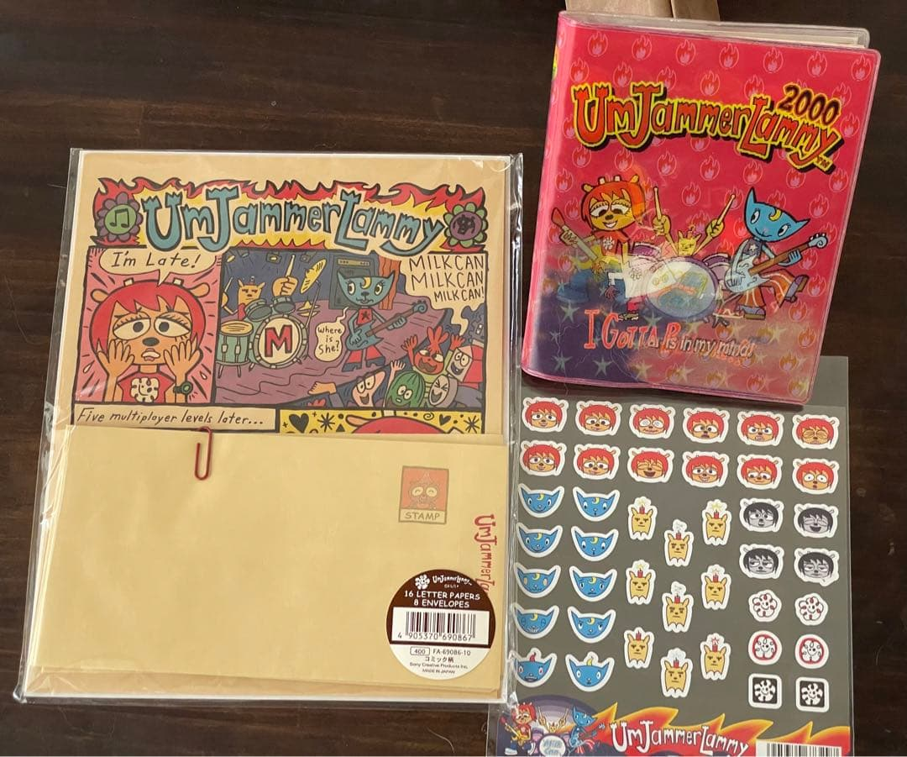
An "Um Jammer Lammy 2000" sticker album — a comic-cover collecting book shown alongside one of its character sticker sheets, still in the original retail wrap.「ウンジャマ・ラミー2000」のシールアルバム。コミック調の表紙のコレクション帳と、付属のキャラクターシール台紙の1枚を、未開封の小売パッケージのまま並べた状態。
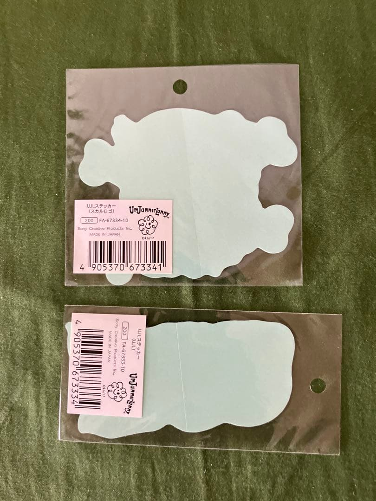
A pair of large die-cut vinyl decals sealed face-down in their header bags — the cloud-shaped skull-logo sticker (FA-67334-10) and the standing-Lammy logo sticker (FA-67333-10), both by Sony Creative Products, Made in Japan.ヘッダー袋に裏向きで封入された大判のダイカット・ビニールデカール2種。雲形のドクロロゴシール（FA-67334-10）と、立ちポーズのラミーをあしらったロゴシール（FA-67333-10）で、いずれもSony Creative Products製・日本製。
— CHARACTER TOPPER PENS —— キャラクタートッパーペン —

Set of three ballpoint pens topped with 3D character figures — yellow "PaRappa," brown "PJ Berri," and red "Lammy" — each barrel printed with the matching character's name.3Dのキャラクターフィギュアが付いたボールペン3本セット。黄色の「PaRappa」、茶色の「PJ Berri」、赤の「Lammy」で、それぞれの軸にキャラクター名がプリントされている。
— NOVELTY TOY PHONES —— ノベルティ トイフォン —

Two "Wit's Pet" character-collection novelty toy mobile phones hung on their retail pegs — a yellow PaRappa the Rapper handset and a red Um Jammer Lammy handset with Lammy rocking her guitar, each with a working LCD and number pad.小売フックに吊るされた「Wit's Pet」キャラクターコレクションのノベルティ・トイ携帯電話2種。黄色のパラッパラッパー版と、ギターをかき鳴らすラミーをあしらった赤いウンジャマ・ラミー版で、いずれも液晶とテンキーが付いている。
— TABLEWARE —— 食器 —
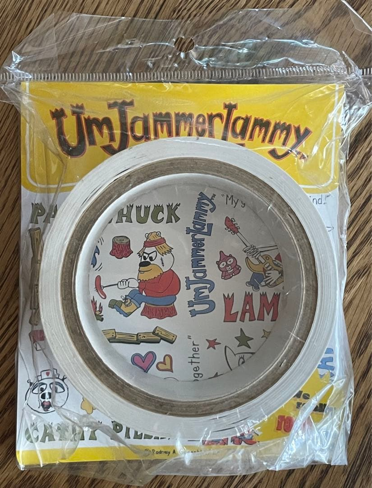
Round melamine character plate with a wood-grain rim, the well printed with the MilkCan cast and the Um Jammer Lammy logo, shown sealed in its original yellow retail bag.木目調のフチが付いた丸いメラミン製キャラクタープレート。中央にはMilkCanのキャラクターたちとウンジャマ・ラミーのロゴがプリントされており、オリジナルの黄色い小売袋に未開封で封入された状態。

Boxed set of three frosted shot glasses, each printed with a different character crest — including the gold "Joe Chin" emblem on the left glass.3個セットのフロスト加工ショットグラス。それぞれ異なるキャラクターの紋章がプリントされており、左のグラスには金色の「Joe Chin」エンブレムが入っている。
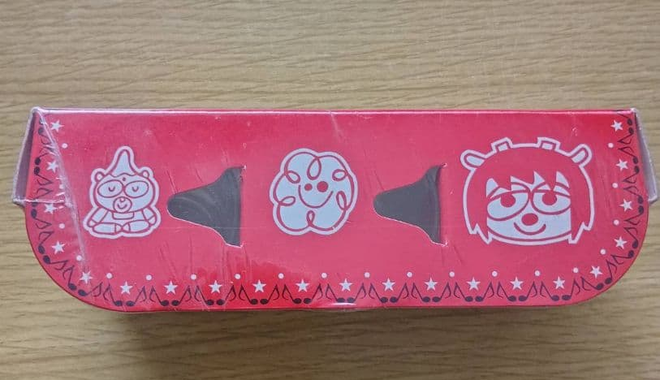
Top of the presentation box, with three character face icons framing the cut-out window of the shot glass set.セットの化粧箱の上面。ショットグラスを覗かせる窓を囲むように、3つのキャラクターフェイスアイコンが配されている。
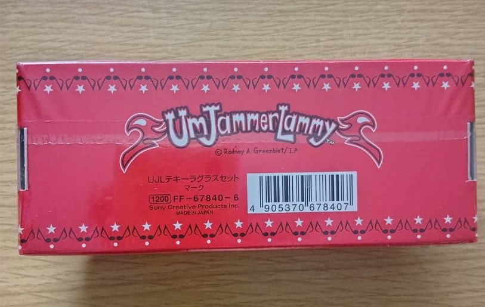
Side of the same red box, printed with the Um Jammer Lammy wordmark and product details.同じ赤い箱の側面で、ウンジャマ・ラミーのロゴと商品情報がプリントされている。
— PROMOTIONAL TAMBOURINE —— 販促用タンバリン —
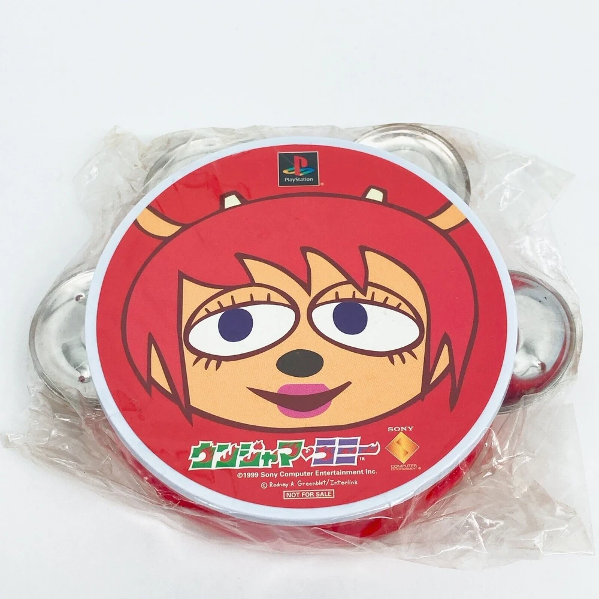
"NOT FOR SALE" promotional tambourine with a red drumhead printed with Lammy's face, topped by the PlayStation logo and the Um Jammer Lammy wordmark. Marked ©1999 Sony Computer Entertainment Inc. / © Rodney A. Greenblat / Interlink.「NOT FOR SALE」の非売品販促タンバリン。赤いヘッドにラミーの顔がプリントされ、上部にはPlayStationロゴ、下部にはウンジャマ・ラミーのロゴが配される。©1999 Sony Computer Entertainment Inc. / © Rodney A. Greenblat / Interlink の表記入り。
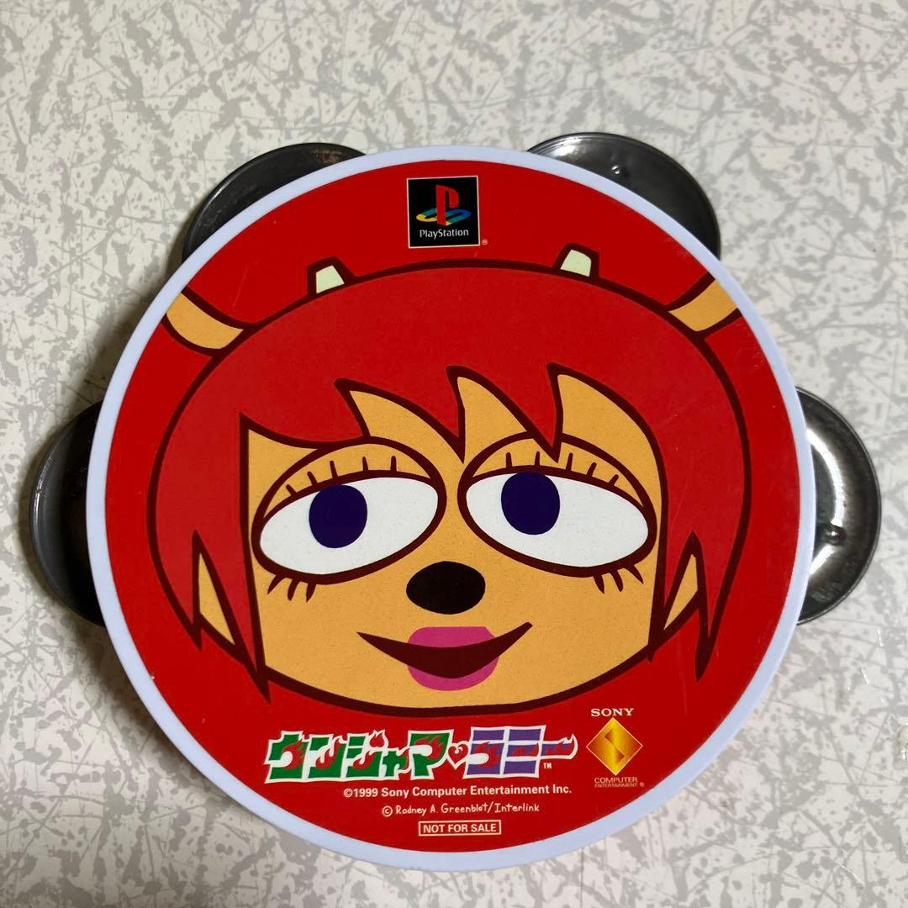
A clean look at the tambourine's printed head: Lammy's big-eyed face on red, the PlayStation logo above and the Japanese ウンジャマ♥ラミー wordmark below, with the jingles peeking out around the rim. ©1999 Sony Computer Entertainment Inc. / © Rodney A. Greenblat / Interlink — marked NOT FOR SALE.タンバリンのプリント面をはっきり捉えた一枚。赤地に大きな目のラミーの顔、上部にPlayStationロゴ、下部に「ウンジャマ♥ラミー」の和文ロゴが入り、フチからはジングルがのぞく。©1999 Sony Computer Entertainment Inc. / © Rodney A. Greenblat / Interlink、非売品表記入り。

The reverse of the same tambourine, showing the plain white back of the head, the red plastic rim, and the four pairs of metal jingles.同じタンバリンの裏面。ヘッドの白い裏地、赤いプラスチック製のフレーム、4組の金属ジングルが見える。
— ENAMEL PINS —— ピンバッジ —

The full series of die-cut character enamel pins, each carded on a flame-bordered Um Jammer Lammy header — including Lammy, Ma-san, Katy, Poofu, and the Chop Chop Master Onion crest. All carry the © Rodney A. Greenblat / I.P licence mark.炎で縁取られたウンジャマ・ラミーの台紙に1つずつ留められた、ダイカット・キャラクターピンバッジのシリーズ一式。ラミー、マーさん、ケイティ、プーフー、チョップチョップ・マスターオニオンの紋章などが揃う。すべて © Rodney A. Greenblat / I.P のライセンス表記入り。

The reverse of the boxed pin series, the six header cards laid out to show their individual barcodes and product numbers.ピンバッジシリーズの裏面。6枚のヘッダーカードを並べ、それぞれのバーコードと品番が分かるようにした状態。

The "LAMMY" enamel pin — a die-cut of Lammy's red-haired, glasses-wearing face — on a purple star-print header card. © Rodney A. Greenblat / I.P.「LAMMY」ピンバッジ。赤い髪にメガネをかけたラミーの顔をダイカットにしたもので、紫の星柄ヘッダーカードに留められている。© Rodney A. Greenblat / I.P。

The "MA-SAN" enamel pin — the yellow, candle-headed drummer with a red heart on her chest — carded on a blue star background. © Rodney A. Greenblat / I.P.「MA-SAN」ピンバッジ。頭にロウソクを灯した黄色いドラマーで、胸に赤いハートをあしらう。青い星柄の台紙に留められている。© Rodney A. Greenblat / I.P。

The "KATY" enamel pin — the blue cat in a stars-and-stripes outfit playing her guitar — on a yellow star-print card. © Rodney A. Greenblat / I.P.「KATY」ピンバッジ。星条旗柄の衣装でギターを弾く青いネコをかたどったもので、黄色い星柄カードに留められている。© Rodney A. Greenblat / I.P。

The "POOFU" enamel pin — the pale, smiling flower-cloud character — carded on a red star background with the ©Rodney A. Greenblat/I.P mark.「POOFU」ピンバッジ。淡い色でにっこり笑う花雲のキャラクターをかたどったもので、赤い星柄の台紙に留められ、©Rodney A. Greenblat/I.P の表記が入る。
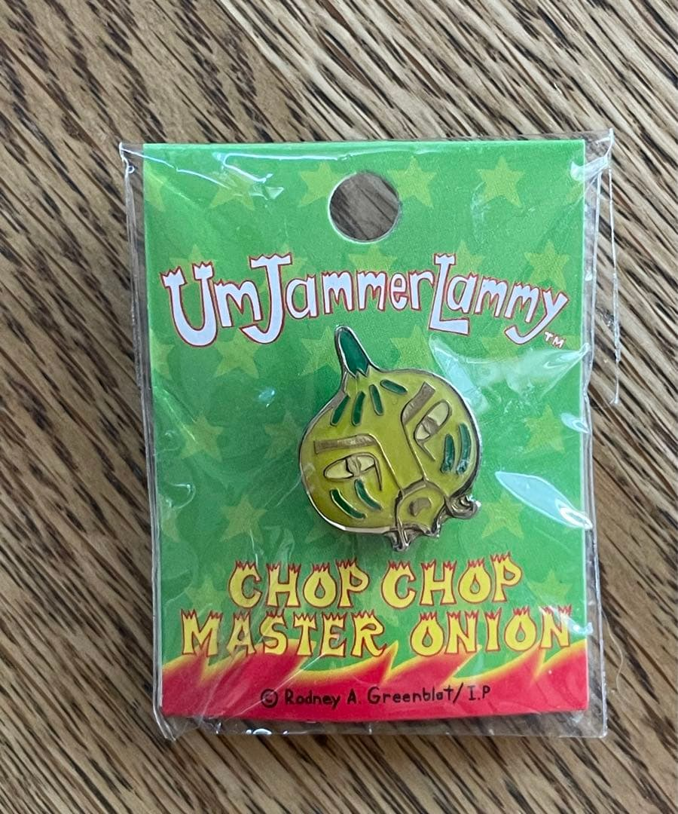
The "CHOP CHOP MASTER ONION" enamel pin — the green onion-headed master in a meditative pose — on a green star-print card. © Rodney A. Greenblat / I.P.「CHOP CHOP MASTER ONION」ピンバッジ。緑のタマネギ頭の師匠が瞑想ポーズをとる姿をかたどったもので、緑の星柄カードに留められている。© Rodney A. Greenblat / I.P。
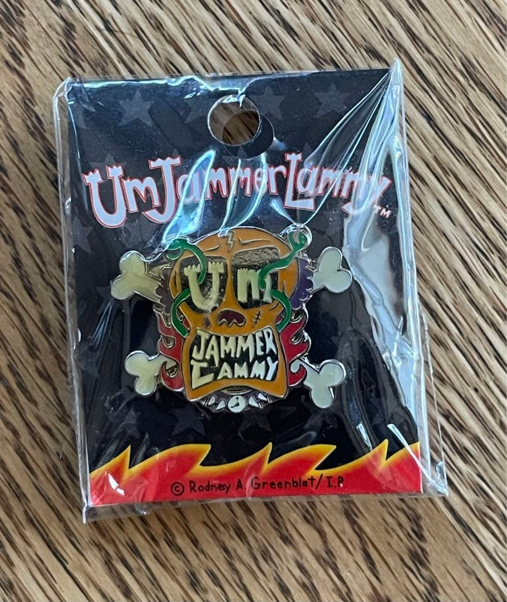
The Um Jammer Lammy logo enamel pin — the orange skull-and-crossbones crest with green snakes — carded on a black star background with a flame border. © Rodney A. Greenblat / I.P.ウンジャマ・ラミーのロゴピンバッジ。緑のヘビが絡むオレンジのドクロ＆クロスボーン紋章をかたどったもので、炎で縁取られた黒い星柄の台紙に留められている。© Rodney A. Greenblat / I.P。
— PINBACK BUTTONS —— 缶バッジ —

A set of four large pinback buttons, each still bagged: the "MilkCan — Live at the Chop Chop Master Arena" concert design, the Um Jammer Lammy comic-panel collage, the "LAMMY ROCKS" face badge, and the orange skull-and-crossbones logo.いずれも袋入りのままの大きな缶バッジ4個セット。「MilkCan — Live at the Chop Chop Master Arena」のライブ告知デザイン、ウンジャマ・ラミーのコマ割りコラージュ、「LAMMY ROCKS」の顔バッジ、オレンジのドクロ＆クロスボーンロゴの4種。

A close-up of the MilkCan badge — the band performing under the "LIVE AT THE Chop Chop Master Arena · 6:00 PM" banner, with Lammy on guitar, Ma-san on drums, and Katy on bass.MilkCanバッジのクローズアップ。「LIVE AT THE Chop Chop Master Arena · 6:00 PM」の文字の下で演奏するバンドが描かれ、ギターのラミー、ドラムのマーさん、ベースのケイティが並ぶ。
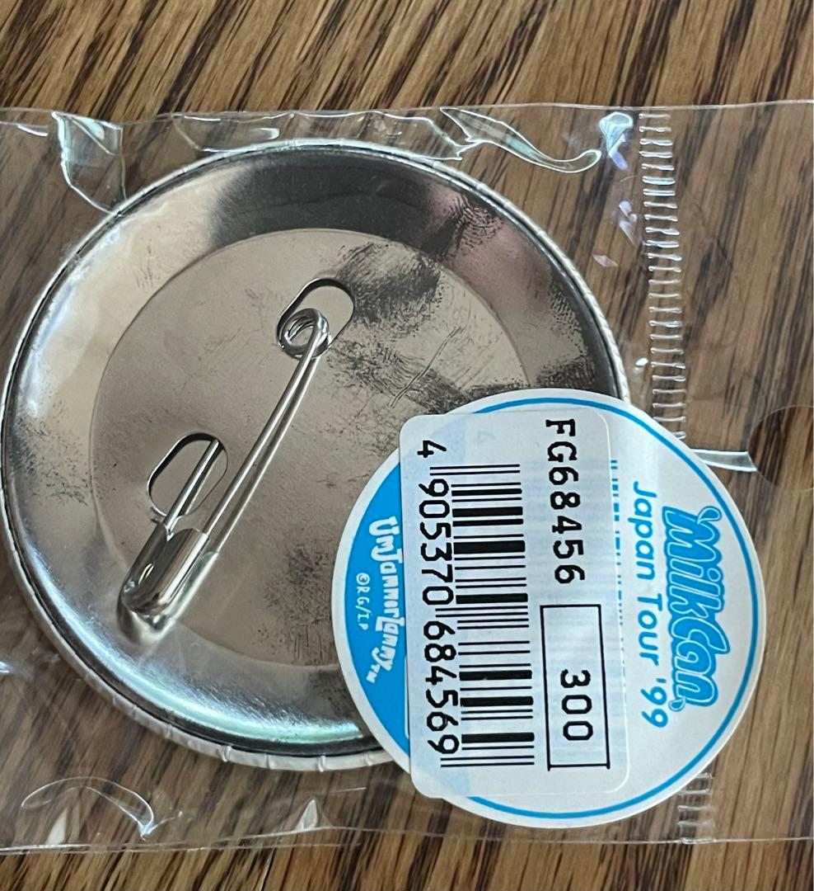
The metal back of one button, with its safety-pin clasp and a "MilkCan Japan Tour '99" barcode sticker (FG68456, ¥300) still attached.缶バッジの金属裏面。安全ピン式の留め具と、「MilkCan Japan Tour '99」のバーコードシール（FG68456、300円）が貼られたままの状態。

The comic-panel collage button on its own — a montage of Um Jammer Lammy story panels, the MilkCan band, and the "My guitar is... in my mind!" scene, sealed in cellophane.コミックのコマ割りコラージュ缶バッジ単体。ウンジャマ・ラミーのストーリー場面、MilkCanバンド、「My guitar is... in my mind!」のシーンを寄せ集めたデザインで、セロハンに封入された状態。

The skull-and-crossbones logo button — the orange "Um Jammer Lammy" crest wrapped in green snakes over flames and crossed bones, bagged with a spare backing disc.ドクロ＆クロスボーンのロゴ缶バッジ。炎と交差した骨の上に、緑のヘビが絡むオレンジの「Um Jammer Lammy」紋章が描かれ、予備の台座ディスクと一緒に袋詰めされている。

The "LAMMY ROCKS" button — Lammy's grinning face between bold red-and-black lettering, with the small Um Jammer Lammy logo beneath.「LAMMY ROCKS」缶バッジ。赤と黒の太字ロゴの間ににっこり笑うラミーの顔が配され、下に小さなウンジャマ・ラミーのロゴが入る。
— WRISTWATCHES —— 腕時計 —

Limited-edition Um Jammer Lammy wristwatch with a black dial showing Lammy rocking her guitar and the logo across the top, fitted on a navy-and-red striped fabric strap.限定版のウンジャマ・ラミー腕時計。黒い文字盤にギターをかき鳴らすラミーと上部のロゴが描かれ、紺と赤のストライプ布バンドが付く。

The polished caseback of the striped-band watch, engraved with the skull logo, "Limited edition," and © Rodney A. Greenblat / I.P, 1999.ストライプバンド時計の磨き上げられた裏蓋。ドクロロゴ、「Limited edition」、© Rodney A. Greenblat / I.P、1999年の刻印が入る。

The striped-band watch presented in its round tin, the red lid printed with a Lammy face, "LIMITED EDITION," and "WRIST WATCH."丸い缶ケースに収められたストライプバンドの時計。赤いフタにはラミーの顔、「LIMITED EDITION」「WRIST WATCH」がプリントされている。

A second watch variant with a rainbow-striped strap, shown with its red presentation tin and the original m.i.x. (Fukuoka) warranty card and foam insert.レインボーストライプのバンドが付いた、もう1種類の時計。赤い缶ケース、オリジナルの m.i.x.（福岡）保証書、スポンジの中敷きと一緒に撮影されている。

The caseback of the rainbow-strap watch, engraved with the same skull logo and © Rodney A. Greenblat / I.P limited-edition marking.レインボーバンド時計の裏蓋。同じドクロロゴと © Rodney A. Greenblat / I.P の限定版刻印が入っている。
— SILVER LAMMY RING —— ラミー シルバーリング —

A sterling silver Lammy-head ring displayed in its clear acrylic box, next to the black gift box stamped in red with the "WE REALLY ROCK THE WORLD! LAMMY" crest and ©R.G/I.P. A battery is included for scale.透明なアクリルケースに収められたラミーの顔型シルバーリング。赤で「WE REALLY ROCK THE WORLD! LAMMY」の紋章と ©R.G/I.P が型押しされた黒いギフトボックスが隣に置かれている。サイズ比較用に乾電池が添えられている。

A close-up of the ring's sculpted bezel — Lammy's face rendered in detailed relief, with tiny red gemstone accents at the sides.リングの彫り込まれたベゼル部分のクローズアップ。ラミーの顔が緻密なレリーフで表現され、両脇に小さな赤い宝石のアクセントが入る。
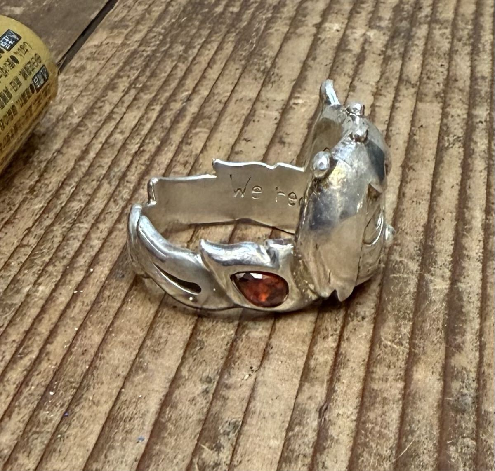
A side view of the ring, showing the flame-styled shoulders set with a red gemstone and the engraved "we re..." inscription running inside the band.リングを横から見た一枚。炎をかたどった肩部分に赤い宝石がセットされ、バンドの内側には「we re...」の刻印が彫り込まれている。
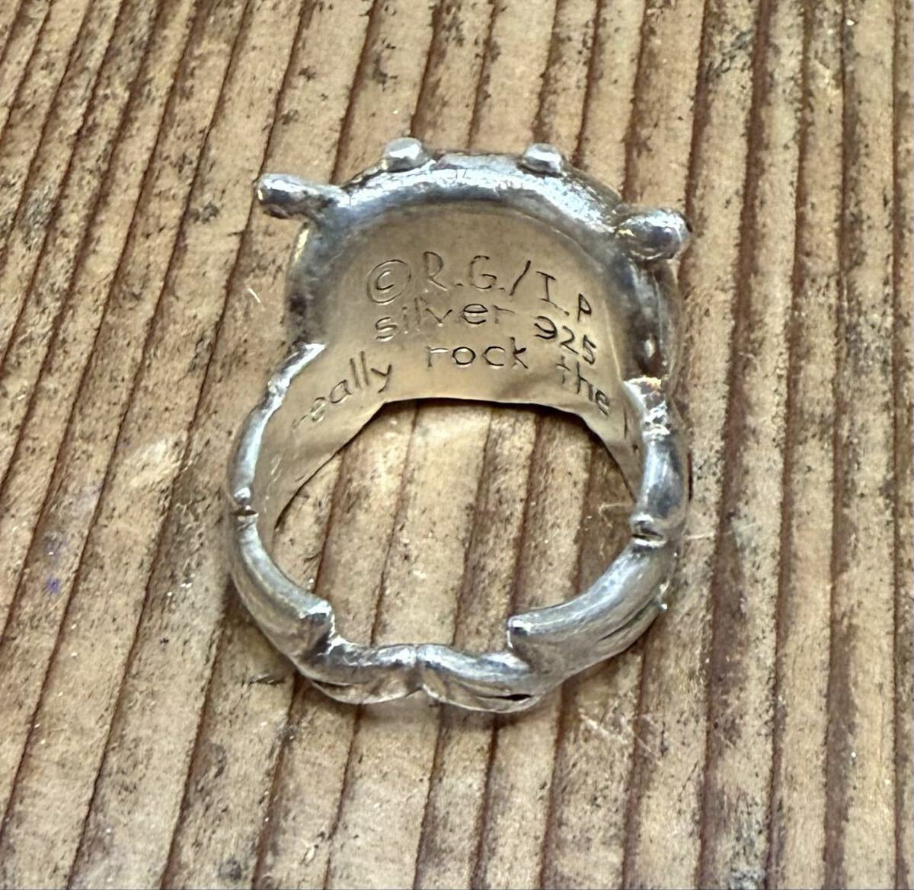
The inner band, engraved ©R.G/I.P, "silver 925," and "really rock the..." — confirming the sterling content and licence.リング内側の刻印。©R.G/I.P、「silver 925」、「really rock the...」と彫られ、純銀製であることとライセンスが確認できる。

The base label on the black box — "UJL シルバーリング（ラミー L)," product FG-67827-1, ¥5,800, Sony Creative Products Inc., Made in Japan, with barcode.黒い箱の底面ラベル。「UJL シルバーリング（ラミー L）」、品番 FG-67827-1、5,800円、Sony Creative Products Inc.、日本製、バーコード付き。
— WRAPPING & WASHI TAPE —— ラッピングテープ＆マスキングテープ —

A roll of white "Um Jammer Lammy" wrapping tape printed with scattered characters, stars, and the "MilkCan together" motif.キャラクターや星、「MilkCan together」のモチーフが散りばめられた白い「Um Jammer Lammy」ラッピングテープのロール。

The header card for the wrapping tape (UJL ラッピングテープ, FA-67818-S), framed by the skull-logo border, Made in Japan by Sony Creative Products.ラッピングテープのヘッダーカード（UJL ラッピングテープ、FA-67818-S）。ドクロロゴで縁取られ、Sony Creative Products製・日本製と記載されている。
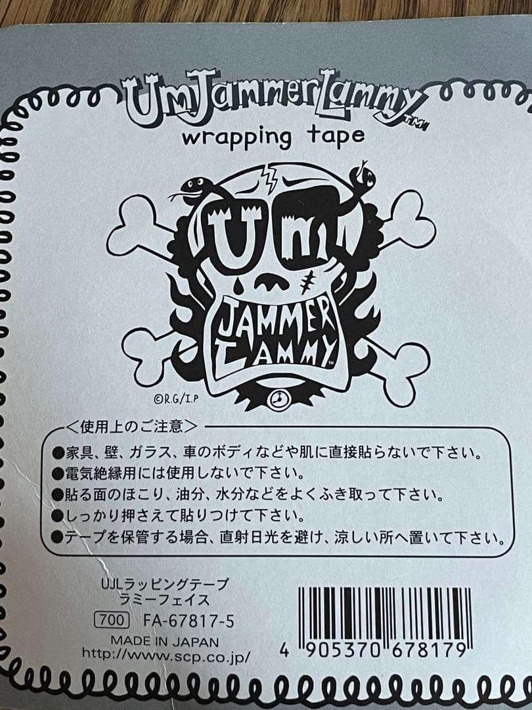
A companion wrapping-tape header card (FA-67817-S) for the skull-logo design, also by Sony Creative Products, Made in Japan.ドクロロゴ柄の対になるラッピングテープのヘッダーカード（FA-67817-S）。こちらも Sony Creative Products製・日本製。
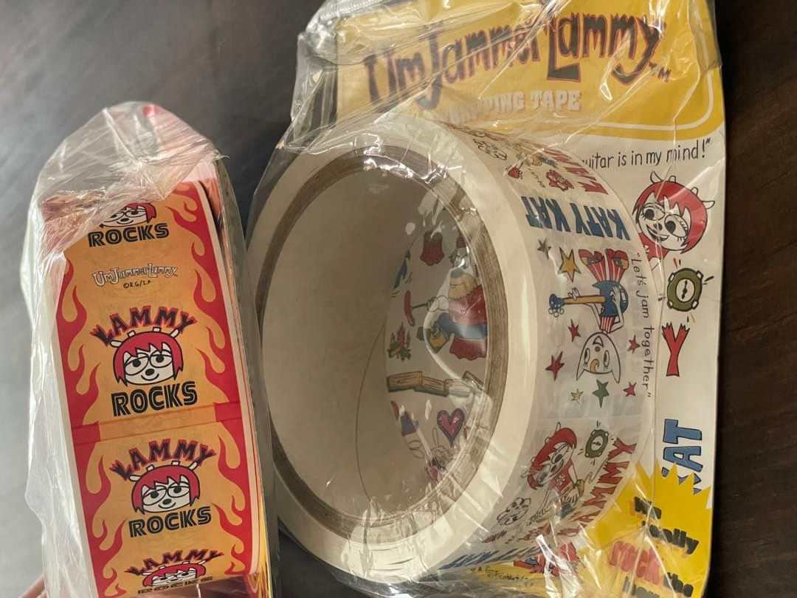
"LAMMY ROCKS" flame-design tape shown both packaged and as an open roll, the white tape printed with characters and the "MilkCan together" line.「LAMMY ROCKS」炎柄のテープを、パッケージ入りと開封したロールの両方で撮影。白いテープにはキャラクターと「MilkCan together」の文字がプリントされている。
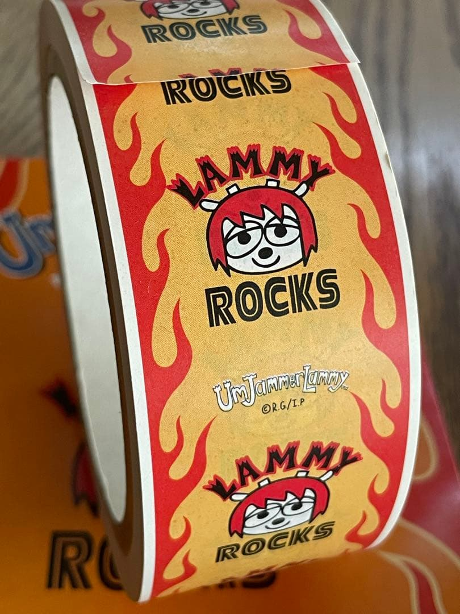
A close-up of the "LAMMY ROCKS" roll, the red flame pattern with Lammy's face repeating along the tape.「LAMMY ROCKS」ロールのクローズアップ。赤い炎模様にラミーの顔がテープ上で繰り返しプリントされている。

The "LAMMY ROCKS" tape sealed in its orange header bag, marked "We really rock the house!"オレンジのヘッダー袋に封入された「LAMMY ROCKS」テープ。「We really rock the house!」の文字が入る。
— BANDANA & CLOTH —— バンダナ＆布もの —

A red Um Jammer Lammy bandana, the center filled with a blue star framing the MilkCan band, bordered by paisley-style flames, crossbones logos, and the wordmark on all four sides.赤いウンジャマ・ラミーのバンダナ。中央には青い星に囲まれたMilkCanバンドが配され、四辺はペイズリー風の炎、クロスボーンのロゴ、ロゴ文字で縁取られている。
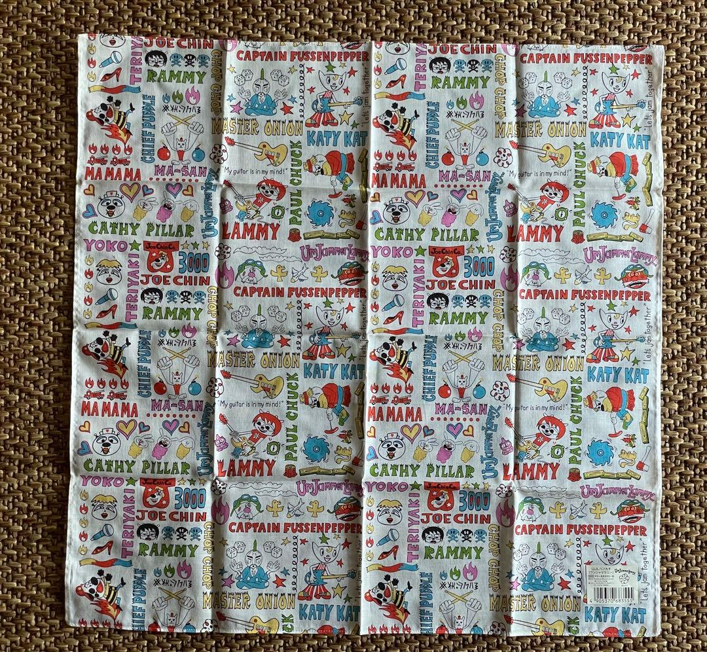
A large printed cloth (handkerchief / furoshiki) laid out flat, packed with a grid of named characters — Lammy, Ma-san, Katy Kat, Master Onion, Captain Fussenpepper, Joe Chin, Paul Chuck, Cathy Pillar, Yoko, Mamama, and more.大判のプリント布（ハンカチ／風呂敷）を広げた一枚。ラミー、マーさん、ケイティ・キャット、マスターオニオン、キャプテン・フッセンペッパー、ジョー・チン、ポール・チャック、キャシー・ピラー、ヨーコ、ママママなど、名前付きキャラクターが格子状にびっしり並ぶ。
— MUSETTE BAG —— サコッシュ —

A natural-canvas musette / sacoche bag, the front printed with the "LAMMY ROCKS" face logo in red and black, still bearing its retail tag.生成りキャンバスのサコッシュ（ショルダーバッグ）。前面に赤と黒の「LAMMY ROCKS」顔ロゴがプリントされ、小売タグが付いたままの状態。

The reverse of the same bag, printed with the red "Um Jammer Lammy" wordmark and showing the full webbing shoulder strap.同じバッグの裏面。赤い「Um Jammer Lammy」のロゴがプリントされ、ショルダーストラップ全体が見える。
— STATIONERY & NOTEBOOKS —— 文房具＆ノート —

A sealed letter set (FA-69086-10) — 16 sheets of letter paper and 8 envelopes — topped with a full-color Um Jammer Lammy comic-panel design. Sony Creative Products, Made in Japan.未開封のレターセット（FA-69086-10）。便箋16枚と封筒8枚のセットで、フルカラーのウンジャマ・ラミーのコマ割りデザインがあしらわれている。Sony Creative Products製・日本製。

A hardcover notebook with the full Um Jammer Lammy comic strip printed on the front — "I'm Late!", "My guitar is... IN MY MIND!", and the Awful-to-Chocolate rating row along the bottom.表紙にウンジャマ・ラミーのコミックがまるごとプリントされたハードカバーノート。「I'm Late!」「My guitar is... IN MY MIND!」のコマや、下部の Awful〜Chocolate の評価欄まで描かれている。
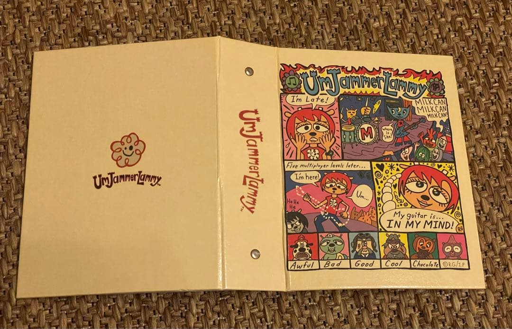
The same notebook opened out, showing the comic-strip front cover and the cream back cover with a small Lammy flower stamp and the Um Jammer Lammy logo.同じノートを開いた状態。コミック柄の表表紙と、小さなラミーの花スタンプとウンジャマ・ラミーのロゴが入ったクリーム色の裏表紙が見える。
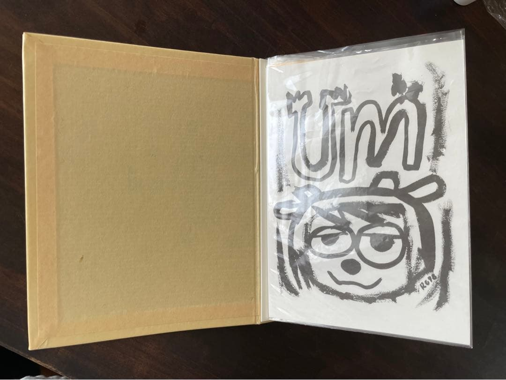
The notebook's inside cover and first leaf, the opening page bearing a sketchy black-and-white "Um" Lammy-face drawing.ノートの見返しと最初のページ。冒頭のページには、ラフな白黒の「Um」ラミー顔のイラストが描かれている。
— MOUSE PET NOVELTY —— マウスペット —

A carded "MOUSE PET SET" novelty — a spring-mounted Chief Puddle topper that clips to a mouse cord and a posable Lammy monitor-mascot figure, sold as a desktop computer accessory.台紙付きの「MOUSE PET SET」ノベルティ。マウスのコードに留めるバネ付きのチーフ・パドルのトッパーと、可動式のラミーのモニターマスコットがセットになった、デスクトップパソコン用のアクセサリー。
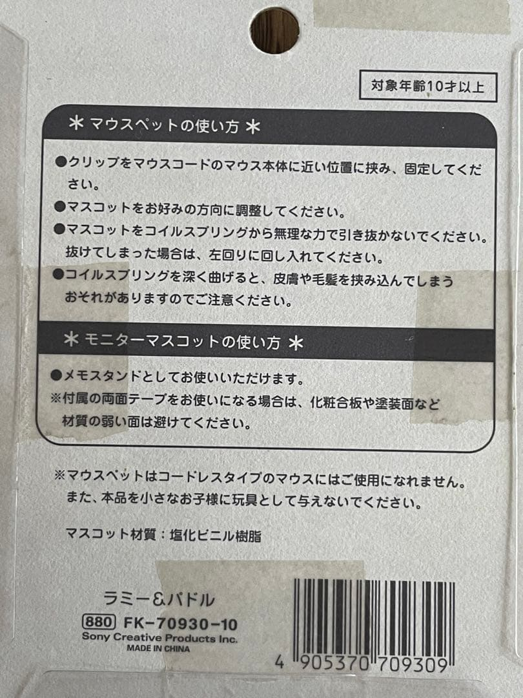
The reverse of the Mouse Pet Set card, printed with Japanese instructions for clipping the mouse pet to the cord and standing the monitor mascot on a screen.マウスペットセットの台紙裏面。マウスペットをコードに留める方法や、モニターマスコットを画面に立てる方法などの使用説明が日本語で印刷されている。
— PROMOTIONAL FLAME SIGN —— 販促フレームPOP —

A flame-shaped die-cut point-of-sale sign — Lammy rocking her guitar on a red flame field beneath the Um Jammer Lammy logo, with a yellow "We really rock the house!" starburst.炎の形にダイカットされた販促POPサイン。赤い炎を背景にギターをかき鳴らすラミーがウンジャマ・ラミーのロゴの下に描かれ、黄色い「We really rock the house!」の星形が添えられている。

The plain gray reverse of the flame sign, showing the die-cut board's shape.フレームサインの無地のグレーの裏面。ダイカットされた台紙の形がよく分かる。
— MILKCAN ALBUM PROMO —— MilkCan アルバム販促品 —

A "NOT FOR SALE" promotional tin and strap for the MilkCan debut album "Make it Sweet!" — the lid advertising the first album (6.19 in store, ¥2,548, SVWC 7031) with the band illustration. ©1999 Sony Computer Entertainment Inc.MilkCanのデビューアルバム「Make it Sweet!」の非売品プロモ缶とストラップ。フタには初アルバムの告知（6.19発売、2,548円、SVWC 7031）とバンドのイラストが入る。©1999 Sony Computer Entertainment Inc.。